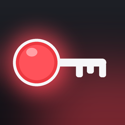

Stand: 07.09.2026
Luma Media, Neroud Suleiman, Fuhrenkamp 26, 21629 Neu Wulmstorf, neroud@icloud.com
Streamee verbindet sich in deinem Auftrag mit deinem YouTube-Konto, um Stream-Schlüssel und Livestream-Sendungen anzulegen, anzuzeigen und zu beenden. Dazu erhält die App nach deiner Zustimmung ein Zugriffstoken von Google (OAuth 2.0).
Das Zugriffstoken wird ausschließlich im geschützten Schlüsselbund (Keychain) deines Geräts gespeichert. Die zuletzt geladene Liste deiner Stream-Schlüssel und die IP-Adresse deines ATEM werden lokal auf dem Gerät gespeichert. Streamee betreibt keinen eigenen Server. Es werden keine Daten an den Anbieter oder Dritte übertragen.
Google / YouTube Data API (googleapis.com) zur Verwaltung deiner Livestreams. Es gilt die Datenschutzerklärung von Google: policies.google.com/privacy. Dein ATEM im lokalen Netzwerk – nur wenn du „Senden an ATEM", Tally oder Switching nutzt.
Streamees Nutzung von Informationen aus Google-APIs entspricht der Google API Services User Data Policy einschließlich der Limited-Use-Anforderungen. Die Daten werden nur genutzt, um die beschriebenen Funktionen bereitzustellen.
Streamee enthält keine Analyse-Tools, keine Werbung und kein Tracking.
Du kannst den Zugriff jederzeit in der App („YouTube-Konto trennen") oder unter myaccount.google.com/permissions widerrufen. Damit werden alle Token auf dem Gerät gelöscht.
Du hast das Recht auf Auskunft, Berichtigung, Löschung und Einschränkung der Verarbeitung. Da Streamee keine Daten außerhalb deines Geräts speichert, bestehen beim Anbieter keine personenbezogenen Daten von dir. Fragen: neroud@icloud.com